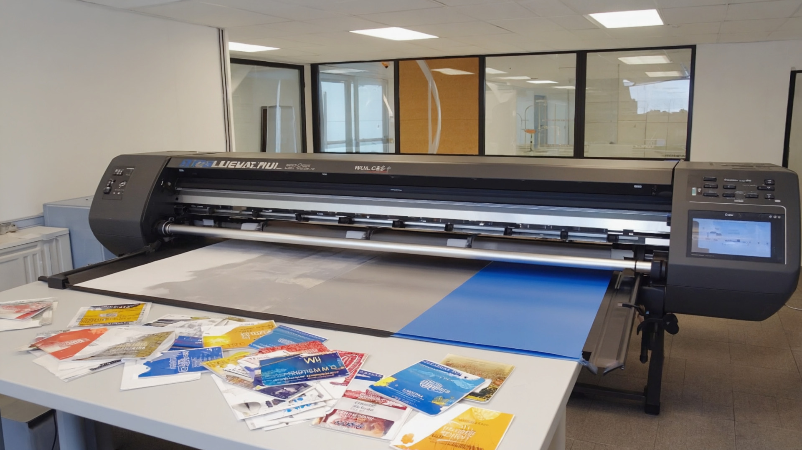
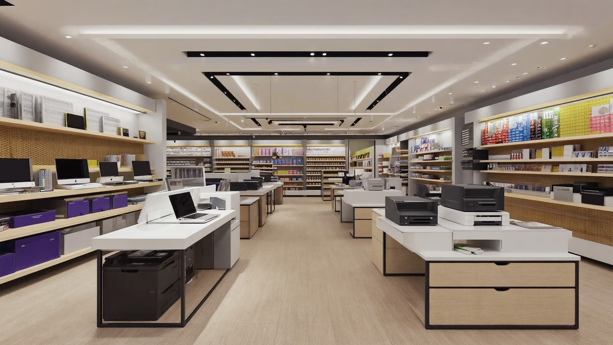

Votre partenaire de confiance à Korhogo pour la confection, l'impression tous supports, le matériel de bureau, le BTP et l'immobilier.
Située à Korhogo, Nouveau Quartier, Yiri Services Korhogo est une entreprise polyvalente qui accompagne les particuliers, les entreprises et les institutions dans leurs besoins du quotidien. Spécialisés dans la confection de vêtements et d'uniformes, l'impression tous supports, la fourniture de matériel bureau, le BTP et la mise à disposition de terrains à vendre, nous proposons des solutions complètes, modernes et adaptées à la réalité ivoirienne.
Yiri Services vous accompagne dans tous vos projets professionnels et personnels à Korhogo et en Côte d'Ivoire.

Yiri Services Korhogo réalise la confection de tee-shirts événementiels, polos, combinaisons de travail, tenues scolaires, tenues EPS, cravates, vestes et blouses médicales. Nous produisons des uniformes professionnels durables, confortables et bien finis, adaptés à votre image et à votre budget.
En savoir plus
Nous proposons l'impression sur bâche, vinyl, Plexiglass, effet miroir, cartes PVC, badges, cartes de visite et flocage de maillots. Pour votre communication, vos événements ou vos administrations, nous offrons une impression de haute qualité, avec des couleurs durables et un rendu professionnel.
En savoir plus
Yiri Services fournit du matériel bureau complet : ordinateurs, imprimantes, accessoires informatiques, fournitures (papier, stylos, classeurs), mobilier (bureaux, chaises, armoires) et consommables. Nous accompagnons les entreprises, écoles et structures publiques dans l'équipement de leurs bureaux.
En savoir plus
Notre branche BTP réalise des travaux de construction, rénovation, aménagement et finition pour maisons, bureaux, boutiques et bâtiments scolaires. Nous mettons à votre service une équipe expérimentée, des matériaux de qualité et un suivi rigoureux des chantiers.
En savoir plus
Yiri Services vous accompagne dans la recherche de terrains à vendre à Korhogo et dans la sécurisation de vos transactions. Nous proposons des lots dans différents quartiers et villages environnants, avec un accompagnement administratif complet.
En savoir plus
En complément, Yiri Services offre des prestations de services générales : petites fournitures, conseils, livraison, accompagnement administratif et logistique. Notre objectif est de vous simplifier la vie en vous apportant un interlocuteur unique pour tous vos besoins.
Nous contacterDes années d'engagement au service de nos clients à Korhogo et en Côte d'Ivoire.
Une entreprise de proximité, à votre écoute, pour des résultats concrets.
Des produits et services conformes à vos attentes, contrôlés à chaque étape avec un souci permanent de durabilité.
Connaissance du terrain et de la réalité locale à Korhogo. Service chaleureux, à l'africaine, avec écoute et conseils.
Nous mettons un point d'honneur à respecter vos délais, en particulier pour les événements et campagnes urgentes.
Un interlocuteur unique pour la confection, l'impression, le matériel bureau, le BTP et l'immobilier.
Engagement sur la qualité et le suivi après prestation. Nous restons disponibles pour vos questions et réclamations.
Contactez Yiri Services Korhogo dès aujourd'hui au +225 07 09 43 62 74 pour un devis gratuit en confection, impression ou BTP.
Nous Contacter